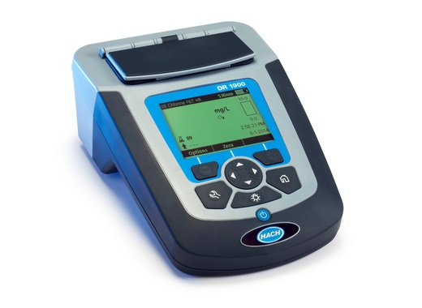
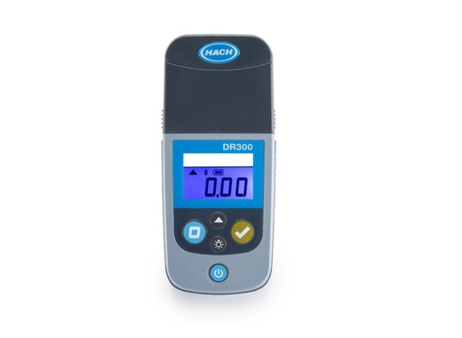
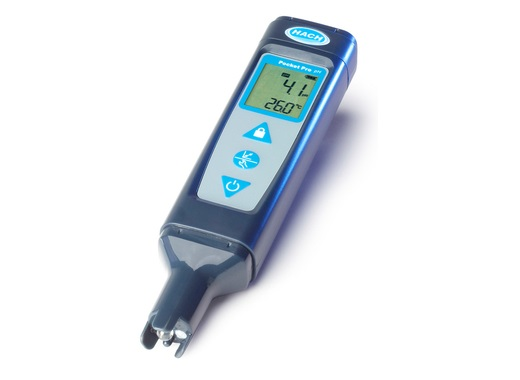
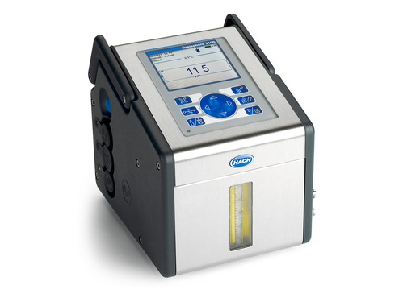
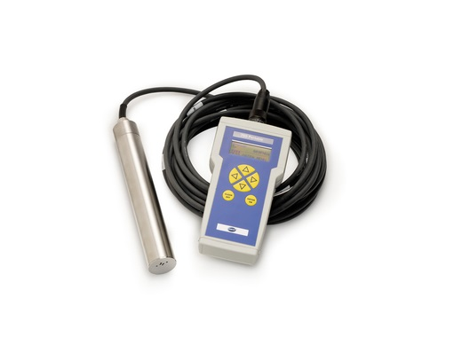
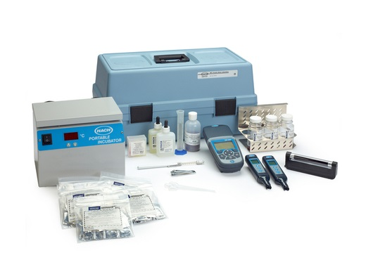

DR900 - მულტიპარამეტრული კოლორიმეტრი
მოიცავს წინასწარ დაპროგრამებულ 90 კოლორიმეტრიულ ანალიზს. ხელსაწყო არის IP67 სტანდარტის და არის წყალგაუმტარი. ტალღის სიგრძეები: 420, 520, 560, და 610 ნანომეტრი. ტალღის სიგრძის სიზუსტე ± 1 ნანომეტრი.მეტის ნახვა ვიდეო

2100Q - სიმღვრივის მზომი
სიმღვრივის განსაზღვრის მეთოდი: გაგზავნილი სინათლის არეკვლა და მისი ინტენსივობის დაფიქსირება 90° გრადუსზე. სინათლის წყარო LED. გაზომვის ერთეული NTU / FNU, დიაპაზონი 0 – 1000.მეტის ნახვა ვიდეო

HQD - ანალიზატორი
HQD ანალიზატორების სამუშაო ინტერფეისი და დაკალიბრების პროცედურა არის მარტივი, მისი გამოყენება არ საჭიროებს ტრენინგს. HQD მეტრები იყენებენ Intellical-ის სერიის ელექტროდებს, და შეუძლიათ განსაზღვრონ მრავალი სხვადასხვა პარამეტრი.მეტის ნახვა ვიდეო

მეტის ნახვა ვიდეო
DR1900 - სპექტროფოტომეტრი
დაპროგრამებული 220 გაზომვადი პარამეტრით. ტალღის სიგრძე 430 – 800 ნანომეტრი. ტალღის სიგრძის სიზუსტე ± 0.1 ნანომეტრი. გამოყენება შესაძლებელია როგორც ლაბორატორიულ, ასევე პორტატულად.მეტის ნახვა ვიდეო

მეტის ნახვა ვიდეო
DR300 - კოლორიმეტრი
განსაზღვრის მეთოდი არის კოლორიმეტრია, რეაგენტების გამოყენებით, წყალში ფერის ცვლილებას, გატარებული სხივის საფუძველზე აღიქვამს სინათლის დეტექტორი, რაც ფორმულით კონვერტირდება 16 სხვადასხვა ქიმიური ელემენტის შემცველობაზე.მეტის ნახვა ვიდეო

SL1000 - პორტატული ანალიზატორი
ახალი თაობის პორტატული ანალიზატორი, რომელსაც შეუძლია ერთდროულად ექვსი ანალიზის გაკეთება, ოთხი კეთდება რეაგენტული ჩხირებით, ორი ელექტროდების მეშვეობით. სამუშაო ტემპერატურა 5 - 50 გრადუსი. ანალიზის სამი მეთოდი, სხივის გატარება, სხივის შთანთქმა, კონცენტრაციის განსაზღვრამეტის ნახვა ვიდეო

მეტის ნახვა ვიდეო
Pocket Pro - ჯიბის ტესტერები
Pocket Pro და Pocket Pro+ ტესტერები ზომავენ 12 სხვადასხვა ელექტრო-ქიმიურ პარამეტრებს. მათ შორის, pH, ORP, გამტარობა, საერთო გახსნილი ნაწილაკები, ტემპერატურა, და სხვა. ავტომატური დიაგნოსტიკის საშუალებით იძლევა ცნობას სენსორის გაწმენდვის ან დაკალიბრების აუცილებლობის შესახებმეტის ნახვა ვიდეო

მეტის ნახვა ვიდეო
Orbisphere 3100 - ჟანგბადის მზომი.
პორტატული ჟანგბადის მზომი, ლუმინესცენციური (ცივი ნათების) ტექნოლოგიით, სწრაფი და ზუსტი შედეგების მისაღებად. დაკალიბრება სჭირდება წელიწადში ერთხელ. გაზომვის დიაპაზონი 0 - 2000 ppb. ცდომილება ± 0.8 ppb ან ± 2% გაზომილი შედეგისმეტის ნახვა ვიდეო

HQ40D - პორტატული მზომი
გაზომვის შესაძლებლობა - pH, გამტარობა, მინერალიზაცია, საერთო გახსნილი ნაწილაკები, გახსნილი ჟანგბადი, რედოქსი, და სხვადასხვა იონსელექციური ანალიტიკური მეთოდები. უერთდება ერთდროულად ორი სენსორი. სამუშაო ტემპერატურა 0 - 60 გრადუსი. 3 წლიანი გარანტიამეტის ნახვა ვიდეო

Sension MM156
ერთი ელექტროდით ზომავს რამდენიმე პარამეტრს, მაგალითად pH, ORP, ტემპერატურა. ასევე სხვადასხვა ელექტროქიმიისთვის დამახასიათებელი მრავლობითი პარამეტრების გაზომვის საშუალება სხვადასხვა ელექტროდებით. IP რეიტინგი 67. გარე სამუშაო ტემპერატურა 0 - 50 გრადუსი. 2 წლიანი გარანტიამეტის ნახვა

მეტის ნახვა
TSS Portable - შეწონილი ნაწილაკების სენსორი
პორტატული, საველე პირობებში გამოყენებადი შეწონილი ნაწილაკების და სიმღვრივის მზომი. სიმღვრივის გაზომვის დიაპაზონი 0.001- 9999 NTU; შეწონილი ნაწილაკების - 0.001-400 გრამი ლიტრზე. ახლავს 10 მეტრიანი კაბელი. სამუშაო წნევა 10 ბარამდე, სამუშაო ტემპერატურა 0 - 60 გრადუსიმეტის ნახვა

მეტის ნახვა
პორტატული წყლის ლაბორატორია
შეიცავს კოლორიმეტრს DR900, საერთო გასხნილი ნაწილაკების და pH მეტრებს, პორტატულ ინკუბატორს, ულტრაიისფერ დასხივებას, ეშერიხე კოლის და საერთო კოლიფორმების ტესტირების მოწყობილობებს, სხვა წყლის სწრაფ ქიმიურ და მიკრობიოლოგიურ ტესტებს.მეტის ნახვა

პორტატული ლაბორატორიები
შეიცავს ინსტრუმენტებს და რეაგენტებს 20 სხვადასხვა პარამეტრისთვის. შეიცავს კოლორიმეტრს DR900, მულტიმეტრს HQ40d, PHC201 pH ელექტროდს, CDC401 გამტარობის ელექტროდს, ციფრულ ტიტრატორს, რეაგენტებს, ინსტრუქციებს, და ეს ყველაფერი მოთავსებულია საველე ყუთში.მეტის ნახვა

მობილური ლაბორატორიები სხვადასხვა კონფიგურაციებით.
pH, გამტარობა, საერთო გახსნილი ნაწილაკები, გახსნილი ჟანგბადი, და ა.შ. შესაძლებელია სხვადასხვა ხელსაწყოების და ქიმიურ - მიკრობიოლოგიური რეაგენტების კომბინაციების შედგენა. გარანტია ვრცელდება ყველა ელექტრო მოწყობილობაზე დამოუკიდებლად. გამოიყენება რთულ საველე პირობებში სამუშაოდმეტის ნახვა

ციფრული ტიტრატორი
პორტატული ციფრული ტიტრატორი იძლევა საშუალებას ტიტრაციის გაკეთების მაქსიმალური სიზუსტით. ახლავს საკუთარი კარტრიჯები 40 სხვადასხვა ელემენტის გასატიტრად. შესაძლებელია როგორც ინდივიდუალური ხელსაწყოს, ასევე ხელსაწყოს და სხვადასხვა დამხმარე კომპონენტების ერთ ნაკრებად შეკვეთამეტის ნახვა
ციფრული ტიტრატორი
პორტატული ციფრული ტიტრატორი იძლევა საშუალებას ტიტრაციის გაკეთების მაქსიმალური სიზუსტით. ახლავს საკუთარი კარტრიჯები 40 სხვადასხვა ელემენტის გასატიტრად. შესაძლებელია როგორც ინდივიდუალური ხელსაწყოს, ასევე ხელსაწყოს და სხვადასხვა დამხმარე კომპონენტების ერთ ნაკრებად შეკვეთამეტის ნახვა
ციფრული ტიტრატორი
პორტატული ციფრული ტიტრატორი იძლევა საშუალებას ტიტრაციის გაკეთების მაქსიმალური სიზუსტით. ახლავს საკუთარი კარტრიჯები 40 სხვადასხვა ელემენტის გასატიტრად. შესაძლებელია როგორც ინდივიდუალური ხელსაწყოს, ასევე ხელსაწყოს და სხვადასხვა დამხმარე კომპონენტების ერთ ნაკრებად შეკვეთამეტის ნახვა